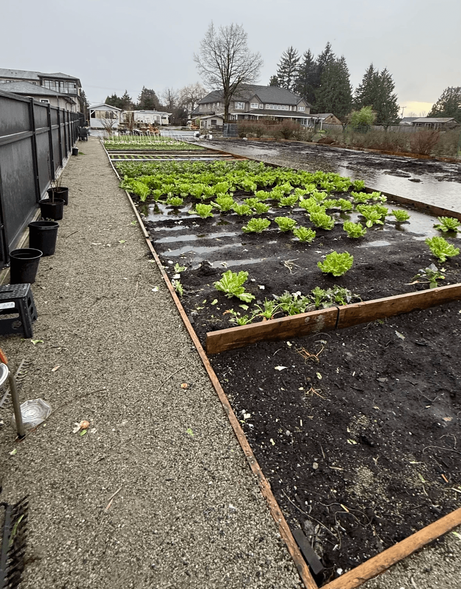
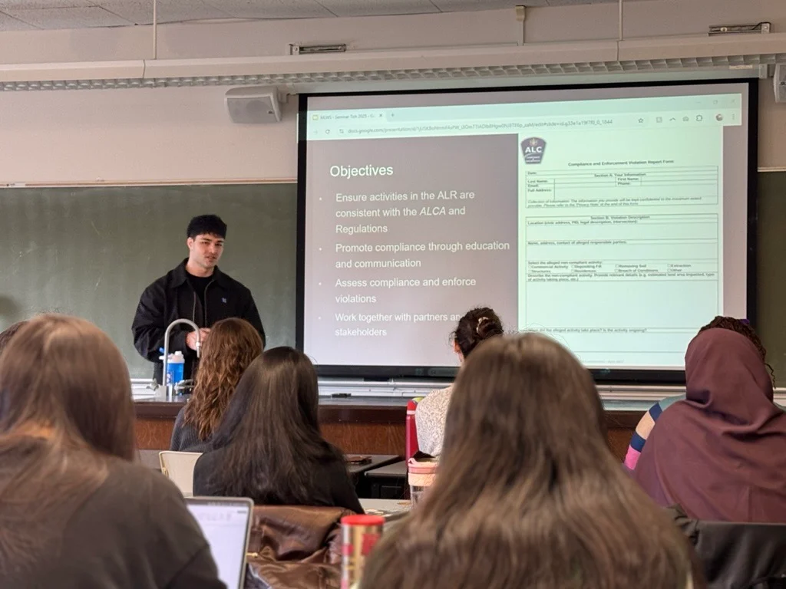

Regulatory Expertise
10+ years of combined ALC and municipal experience equip us to navigate complexities efficiently.
Full-service agrology and construction solutions built on a decade of public-sector experience in British Columbia.


Titrin Agrisoil Solutions Ltd. was founded by Tishtaar (Tish) Titina, P.Ag., a Professional Agrologist with over 10 years of experience working across agricultural land use planning, regulatory compliance, environmental assessments, and construction oversight.
Tishtaar holds a Bachelor of Science in Plant and Soil Science and a Master of Science in Land and Water Systems, both from the University of British Columbia (Vancouver). He is a registered Professional Agrologist (P.Ag.) with the BC Institute of Agrologists.
Prior to establishing Titrin Agrisoil Solutions, Tishtaar spent more than a decade working between the Agricultural Land Commission (ALC) and the City of Richmond, where he was directly involved in compliance review, agricultural soil assessment, land development evaluation, and on-the-ground construction oversight.
Through Titrin Agrisoil Solutions, Tishtaar provides agricultural assessments, farm plans, ALC applications, municipal permitting, and soil and land development advisory services, supporting projects from early concept through construction close-out.
Science-backed solutions, local expertise, and a commitment to sustainable land use.
10+ years of combined ALC and municipal experience equip us to navigate complexities efficiently.
Recommendations grounded in technical soil science and real site conditions — not generic templates.
We're there in the field — monitoring work, supporting compliance, and proactively solving issues.
We speak the language of landowners and regulators alike — bridging communication gaps to keep projects moving.
Most firms hand you a report and walk away. We handle the full cycle — assessments, permitting, construction, and compliance — so you have one team from start to finish.